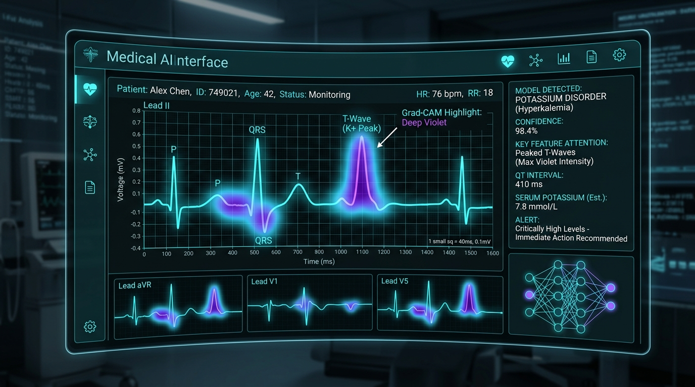
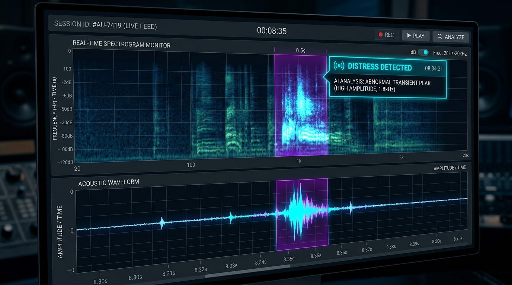
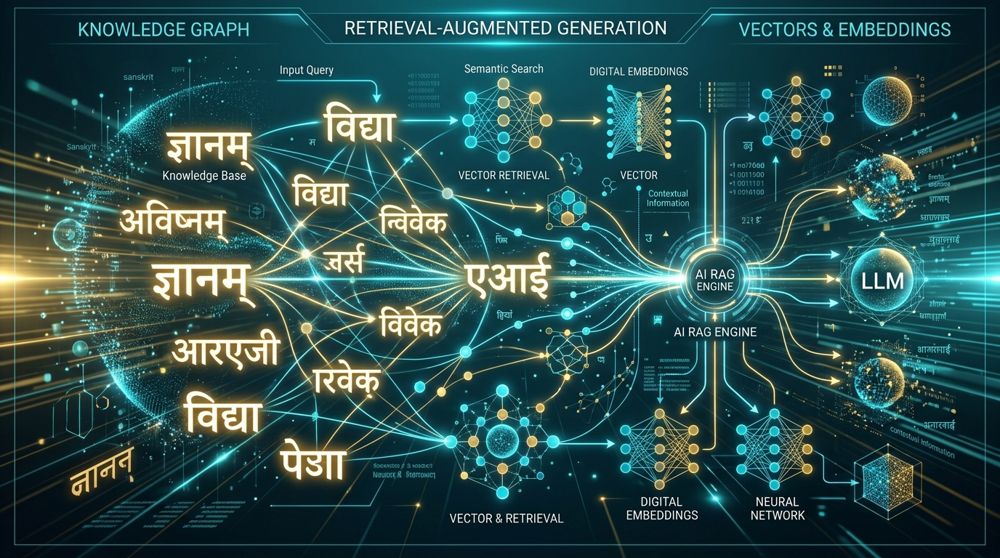
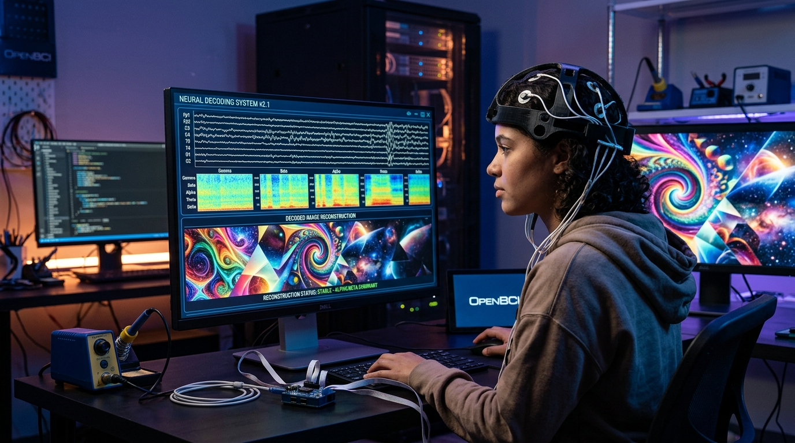
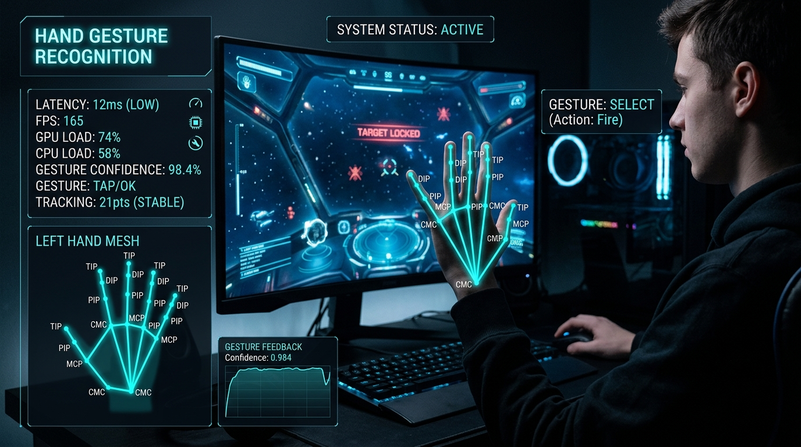

Araya Tripathi
|
Specialized in deep learning (CNN, LSTM, Attention, GAN), clinical AI deployment with cardiologists at BETiC Lab, real-time computer vision, and privacy-preserving local RAG architectures.
// About Me
Engineering Clinically-Validated & Real-Time AI
I am a final-year Computer Science (AI & ML) engineer at GH Raisoni College of Engineering, Pune, Maharashtra, and a credit-transfer student at IIIT Pune, maintaining a 9.0 / 10 CGPA and ranking as department topper (2/120).
My core technical passion lies in translational deep learning: taking complex AI algorithms out of theoretical notebooks and embedding them into clinical and interactive systems where reliability and speed genuinely matter. At BETiC Lab, I engineered a potassium disorder detection pipeline evaluated across multiple deep learning architectures, achieving high diagnostic accuracy in direct collaboration with clinicians at Lata Mangeshkar Hospital.
I also created an explainable, non-invasive potassium disorder detection pipeline for CKD patients using EfficientNet-B4 + Grad-CAM, deployed as a live cross-platform PWA in clinical partnership with Lata Mangeshkar Hospital. Beyond healthcare, my work spans real-time computer vision gesture interfaces (12ms latency with MediaPipe), offline private Sanskrit RAG querying with Ollama, and audio deep learning.
Clinical AI & Grad-CAM
Validated with hospital cardiologists; explainable heatmaps for non-invasive diagnosis.
Real-Time Computer Vision
MediaPipe & OpenCV pipelines optimized with quantization and batching.
Privacy-First RAG & LLMs
100% offline retrieval with Ollama & ChromaDB; zero cloud data leakage.
Indexed Publications
Scopus & Web of Science research in Ovarian Cancer AI and Women's Safety.
// Technical Arsenal
Frameworks, Toolkits & Expertise
The engineering stack I leverage to design, train, and deploy intelligent models.
Deep Learning & Architectures
State-of-the-art neural networks across time series, images, and generative tasks.
Vision & Signal Processing
Real-time landmark extraction, object detection, and biosignal analysis.
Generative AI & RAG
Offline private knowledge retrieval and intent-driven conversational agents.
Machine Learning & EDA
Data exploration, statistical modeling, and predictive recommender systems.
Deployment & Automation
Deploying models as user-facing applications and automated workflows.
Languages & Core Foundation
Algorithmic foundations and credit transfer coursework at IIIT Pune.
// Featured Projects
Proven AI & Machine Learning Engineering
Filtered by engineering focus. Click "Project Story 📖" on any project to explore the clinical/technical challenge, architecture, and impact.

Non-Invasive Potassium Disorder Detection
Clinical deep learning system for Chronic Kidney Disease (CKD) patients predicting serum potassium levels non-invasively from ECG images. Incorporates Grad-CAM visual heatmaps for nephrologist interpretability and deployed as a live cross-platform PWA in clinical collaboration with Lata Mangeshkar Hospital.

Human Scream & Distress Detection
Audio-based deep learning classifier engineered in Python to detect human distress screams in real time. Processes continuous microphone acoustic streams into mel-spectrograms for instantaneous threat classification in women's safety and emergency-alert systems.

RAG Sanskrit: Privacy-Preserving Engine
Built an entirely local, offline Retrieval-Augmented Generation (RAG) system to query and analyze ancient Sanskrit texts. Employs Ollama for on-device inference and ChromaDB for vector retrieval, ensuring zero data leakage and eliminating all external API dependencies.

OpenBCI: EEG-to-Image Generation
Decoded neural brain signals captured via OpenBCI EEG into visual imagery. Implemented specialized biosignal preprocessing, noise filtering, and frequency band decomposition (Delta, Theta, Alpha, Beta) feeding deep generative neural pipelines.

Gesture-Controlled Gaming Interface
Real-time computer vision interactive system deployed at Techshaksham. Captures 21-point hand tracking landmarks and body pose to drive game controls with minimized input latency through pipeline batching, multi-threading, and model quantisation techniques.
Recommendation System & NLP Chatbot
Hybrid platform integrating collaborative filtering recommendations with an intent-classification NLP chatbot trained on user behavioral data, interactively deployed using Streamlit.
AI-Based Gingivitis Detection Pipeline
Multi-class periodontal classification pipeline developed at BETiC Lab featuring real-time clinical data collection, automated dental annotation, and model fine-tuning with transfer learning.
// Publications & Research
Peer-Reviewed Research
Contributions to international scientific literature indexed in Scopus and Web of Science.
Ovarian Cancer Prediction Using Artificial Intelligence
Investigated early-stage ovarian malignancy classification using machine learning and deep learning architectures on clinical biomarker profiles. Focuses on handling class-imbalanced medical data and high-sensitivity screening to minimize false negatives in oncology diagnostics.
AI, IoT, and Cloud-Based Tools for Women's Safety
Authored a peer-reviewed book chapter addressing multi-modal safety frameworks. Details acoustic scream detection via convolutional spectrogram networks, paired with wearable IoT sensor telemetry and low-latency cloud alerting channels.
// Career History
Work Experience
Clinical AI research, computer vision engineering, automation development, and student counselling.
Student Counsellor
Jan 2026 – June 2026- Managed end-to-end student acquisition funnels for executive online MBA programmes, actively tracking conversion analytics and optimising outreach strategy to consistently achieve enrolment targets.
- Leveraged CRM tools to maintain structured lead pipelines, improving follow-up response speed and cross-functional synergy with marketing teams.
Freelance Software & Automation Developer
Oct 2025 – Jan 2026- Deployed and customized bespoke client websites, engineering custom referral-link tracking architectures and automated workflows using Zapier and n8n.
- Designed interactive, animated healthcare presentation decks utilized by clinicians and domain experts at international conferences.
Research & AI Intern
May 2025 – Nov 2025- Engineered an ECG-based arrhythmia classification system across 6 deep learning architectures (CNN, LSTM, Attention) in PyTorch and TensorFlow, achieving 98% test accuracy on the MIT-BIH dataset in direct collaboration with cardiologists for clinical validation.
- Built a non-invasive potassium disorder detector for CKD patients using EfficientNet-B4 on ECG images; integrated Grad-CAM explainability heatmaps and deployed as a cross-platform PWA mobile app in partnership with Lata Mangeshkar Hospital.
- Developed an AI-based Gingivitis detection and multi-class classification pipeline with real-time clinical data collection, automated annotation, and model fine-tuning using transfer learning.
AI & Computer Vision Intern
Dec 2024 – Jan 2025- Built real-time object detection, pose estimation, and hand-gesture recognition pipelines in Python using OpenCV and MediaPipe; optimized deep learning inference for multi-user interactive systems.
- Designed and deployed a gesture-controlled gaming interface, significantly reducing input latency through pipeline batching, multi-threaded capture, and model quantisation techniques.
// Academic Foundation
Education & Honours
Computer Science & Engineering (AI & ML)
GH Raisoni College of Engineering, Pune, Maharashtra
Recognized as Department 2nd & 3rd Topper across 1st, 2nd, and 3rd academic years.
Selected for prestigious credit-transfer curriculum at Indian Institute of Information Technology (IIIT), Pune.
Looking for a Data Science / AI & ML Engineer?
Based in Pune, Maharashtra, India (open to relocation & remote opportunities). I am available for full-time engineering roles, research collaborations, and impactful AI projects. Feel free to reach out directly.